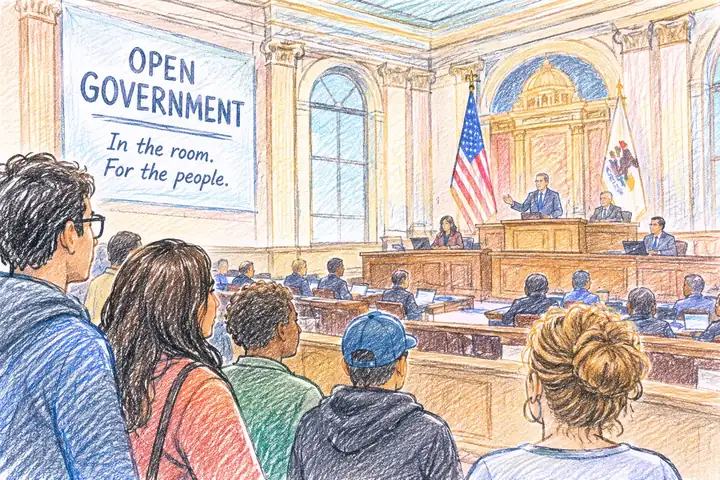

Hearings & public comment
Government isn’t just something you watch — you can participate.

Tap a state, Chicago or the federal agencies to see the hearings coming up there and how to weigh in.
Hearings coming up How to take part
Loading hearings…
Tell Illinois lawmakers where you stand on a bill before its committee votes. It takes about two minutes, it’s free, and anyone can file one.
Slips are public. Anyone can see on ilga.gov the name, who you represent and the position on every slip filed. Committee members see how many people are for and against each bill.
Loading Illinois hearings…
Feed address · for a reader app
A feed address is for a reader app, not a browser or a post. To share with people, copy the page link instead.